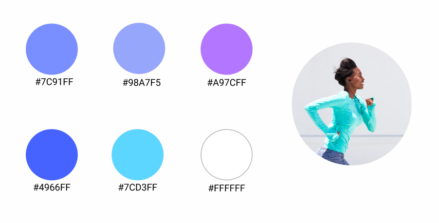

INTRODUCTION
ABOUT THE PROJECT
Runella is a product concept that came to life through my CSCI 3160 User Interface Design course at Dalhousie University. The objective of this project is to create an aesthetic app that provides a platform for people to find jogging buddies in their area so they never have to exercise alone.
PROMPT
Given the rapid rates of morbid obesity in Canada and the US, it is safe to assume that low physical activity is a widespread phenomenon. The effects of lack of activity is catastrophic and affects millions of people. Here are some key numbers of Obesity in the US:
CHALLENGE
While searching for reasons people do not exercise or keep up with their fitness goals, I found that lack of accountability was a common reason. Thus, this research led to my initial question: How do we motivate people to stay active by holding them accountable?
MY ROLE
My goal for this project was to explore ways to take an exercise app to the next level through user research, analysis, and best practices in UX and UI design.
APPROACH
1. RESEARCH & DEFINE
Competitive analysis | User research | User persona, Tasks, & Scenarios | Sketching & Storyboards
2. IDEATE
Low-fidelity prototypes | Mid-fidelity prototypes | High-fidelity prototypes | Usability Heuristic Evaluation
3. USABILITY TESTING
Scenario walkthroughs | Cognitive walkthrough
4. VISUAL DESIGN
Evaluating for visual Design Principles | Evaluating for Accessibility | Style guide
RESEARCH & DEFINE
COMPETITIVE ANALYSIS
I chose two potential competitors to analyze, Strava and Runtastic. After trying all their features, I summarized some usage pain points, which became the opportunity areas for me when designing Runella.
USER RESEARCH
To better understand our potential users, I conducted user research using the ACM digital library. I also interviewed 5 physically active people aging 20 to 40. the interview was semi-structured and open-ended so people are able to share details of their exercise habits, how they motivate themselves to exercise, and what usually causes them to fall off track. After conducting the user research, I found out most age groups between 15 to 24 years were amongst the age ranges that had the lowest physical activity rate. Additionally, prevalence of low physical activity was higher in females than in males. I also found the common cause for failing to excise regularly is redundancy/boredom and lack of accountability (no one pushing them to remain consistent with their exercise, such as a personal trainer).
Therefore, our target users would be young adult women, especially those who are beginners/amateur to running.
USER PERSONA, TASKS, & SCENARIOS
Based on the research insights, I developed user personas to capture our target user's feelings, needs, and expectations.
SKETCHING & STORYBOARDS
As a team, we conducted an initial brainstorming/evaluation cycle using sketches and storyboards. The goal of this task was communicate a unique application concept through sketches. At the end of this activity, we discussed our proposals and sketched a hybrid concept.

Storyboard shows the application concept from the sketching activity applied to one of the use scenarios.
REFRAME DESIGN QUESTION
The above findings helped us further narrow down our problem statement, so we came up with our final design question:
How do we motivate young adult women to stay active by making the activity fun/less redundant and holding them accountable?
IDEATE
SITEMAP
Based on my research, user personas, tasks, and scenarios, I defined Runella's product structure. I aimed at keeping the structure simple with minimal with no more than 5 levels of depth.
WIREFRAMING
After creating the sitemap, I started creating wireframes using pen and paper. I then created low-fidelity prototypes using Blasamiq to represent the user flow.
PROTOTYPING
For medium-fidelity prototypes, I continued using Balsamiq. I then switched to Figma to create my high-fidelity prototypes.
USABILITY TESTING
SCENARIO WALKTHROUGH
After completing each prototype (low, mid, high), I demonstrated the prototypes to my classmates and T.A.s by walking through each scenario. While walking through the scenario, another member of my team would note down the observations we received.
COGNATIVE WALKTHROUGHS
After completing the mid-fidelity prototype, we conducted a cognitive walkthrough. For this exercise, we presented the scenarios for four evaluators (members of a different team) and asked them to answer three simple questions about the steps taken to complete each task. The questions asked were:
1. Will the correct action be sufficiently evident to the user? Will the user know what to do to achieve the task?
2. Will the user notice that the correct action is available? Is it apparent when needed?
3. Will the user associate and interpret the response from the action correctly? Will users know from the feedback that they have made a correct or incorrect choice of action?
USABILITY TESTS - FINDINGS
After collecting the information, I summarized all the feedback we received from the scenario and cognitive walkthroughs and listed them according to importance (must haves. vs. nice to haves).
CONCLUSION
Fixing issues with high severity (most important) were prioritized in the development process. For example, many users had trouble creating a group while using our prototype. This feature is part of our minimal functionality, thus it was prioritized. Fixing these issues were important so that the upcoming usability testing will show us already if further changes or improvements are needed.
VISUAL DESIGN
VISUAL DESIGN PRINCIPLES
COLOUR PALETTE
The Runella colour palette is analogous, mainly consisting of different shades of purple and blue. Before choosing this colour scheme, research was done on the psychology behind colours. Purple mixes the vibrancy of red with the calmness of blue, and gives an uplifting effect to users.
Various shades of grey have been used to add depth to text and backgrounds.
ACCESSIBILITY DESIGN
1. Login/Registar Screen
In the first version, the text field for the name, email, and password was not clear as it did not have a clear border and gave hints that would disappear as soon as the user starts to input text. To solve this issue, a boarder was given to the input field with an input label above it.
2. Navigation Bar
In the first version, the selected button on the navigation bar was not clear enough (not enough contrast). This can be annoying for users with visual impairments. To solve this issue, the button is highlighted with a darker background to stand out from the other buttons.